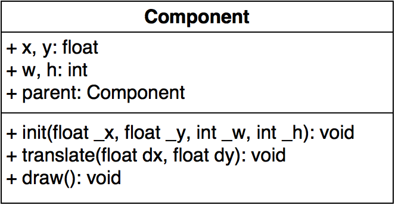

"Compose objects into tree structures to represent part-whole hierarchies. Composite lets clients treat individual objects and compositions of objects uniformly."Design Patterns - Elements of Reusable Object-Oriented Software
We'll get back to these in a moment...
Having distinct interfaces for every leaf and composite leads to unnecessary complexity in our applications.
The pattern addresses a "high fan out" problem where one interface needs to be aware of several other interfaces.
This usually results in run-time type checking (BAD) and other code smells.
Recursive Data Structures (ex: Files and Folders) are examples of composite objects created from primitive leaf components and other composites.
If our user treats these objects as the same... (open, read, write) then so can our application code, and...
These objects can likely implement the same interface!
A successful implementation results in "1-1" or "many to 1" relationships with the Component class interface.
Application code can call a method of a component, for example: "print" or "copy" without worrying whether the type is leaf or composite.
Objects: word, sentence
A sentence is simply a composite of words and each word object has a local position inside the sentence.
We can copy, move, delete or display the whole sentence with one method call in our application code, and the sentence object will delegate these method calls to it's children, the word objects.
But wait! What about paragraphs...?
Design and implement a graphics engine to render ellipses, rectangles and graphics (composite group of either ellipses or rectangles).
Application code should be able to do the following:
abstract class
Using our design, we will write a few lines of code to implement it.
Again we will extend the abstract class Component.
Congratulations you implemented the Composite Pattern!
Remember these terms?
Well our graphics example defines a tree structure though composition, this is also sometimes referred to as a "scene graph" in graphics engines.
The composition structure also defines a hierarchy of parts in the context of the composite whole.
Where should we define parent references (if any)?
Where do we define our methods for manipulating children?
Remember the graphics example from earlier?